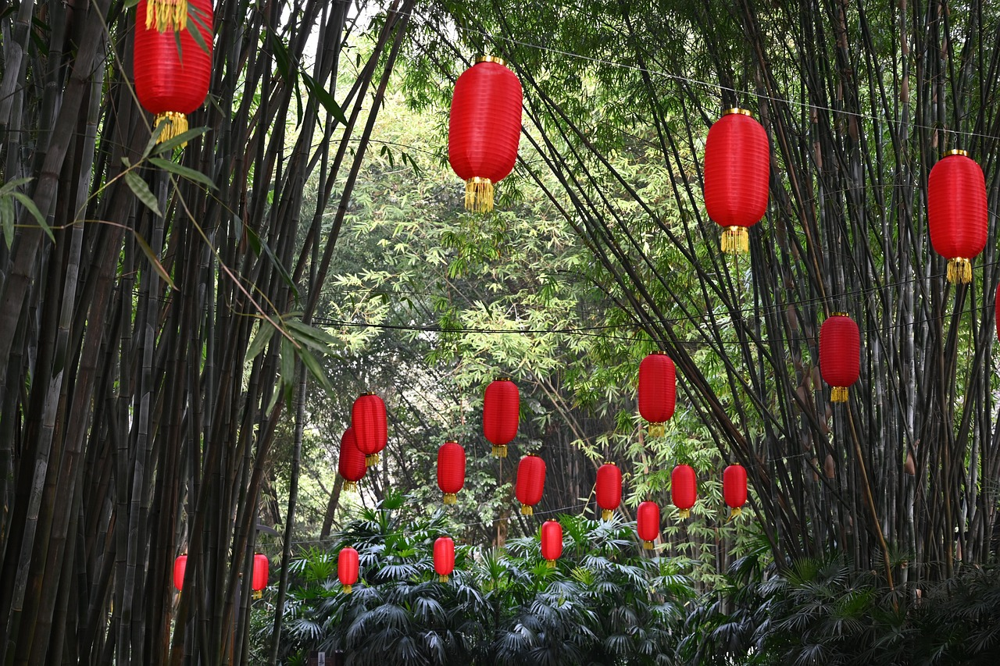
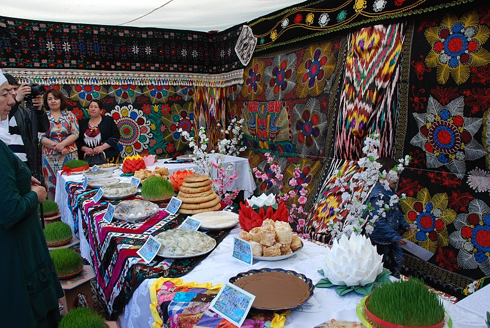
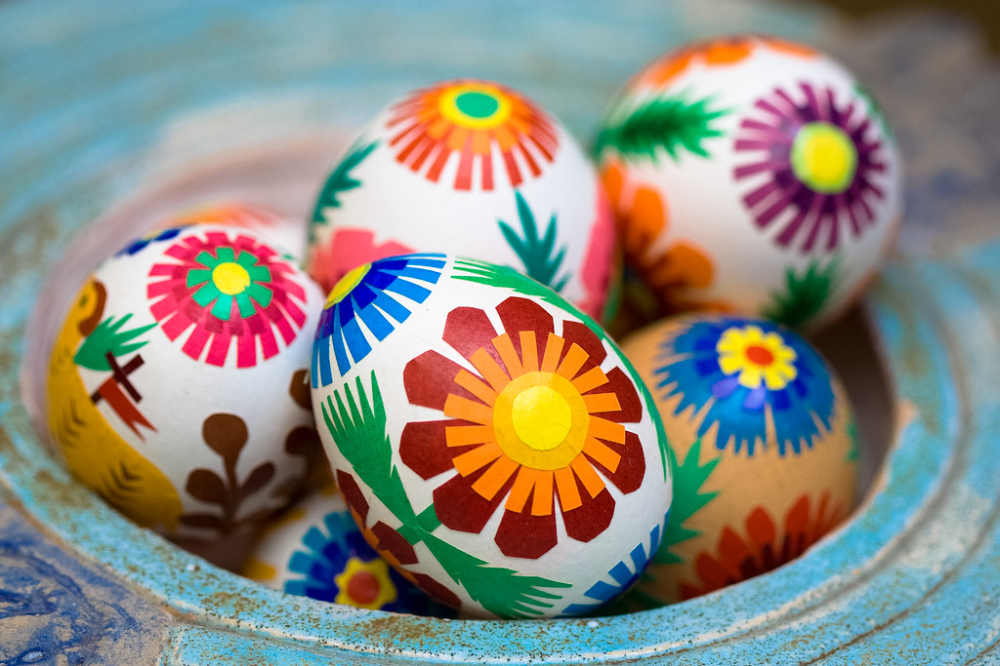
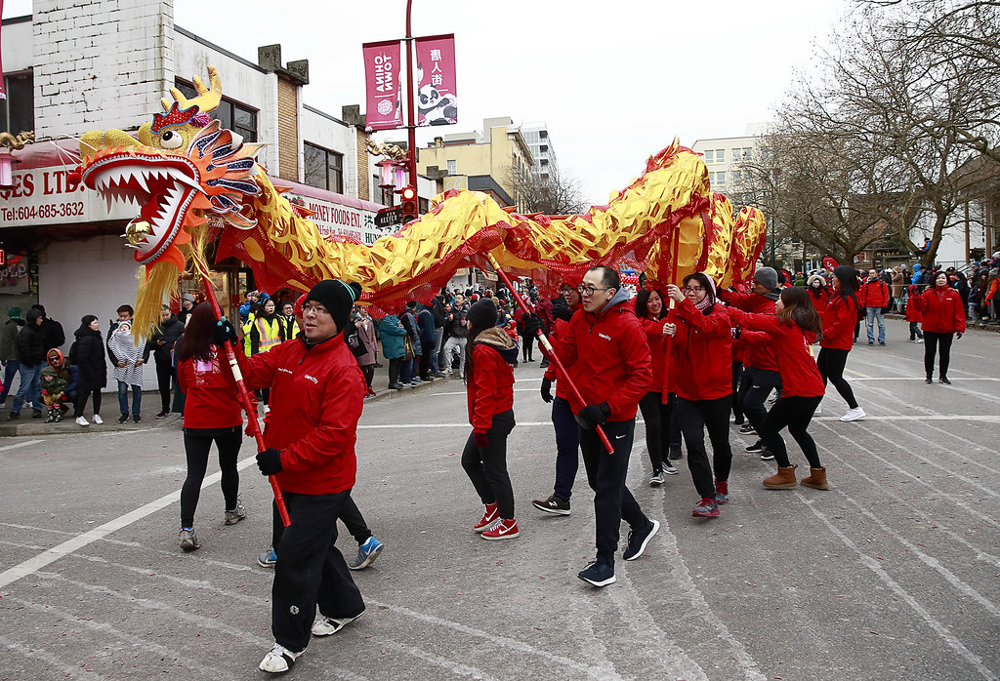
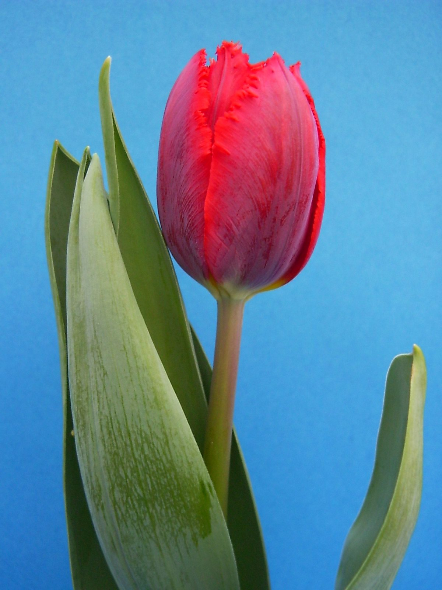
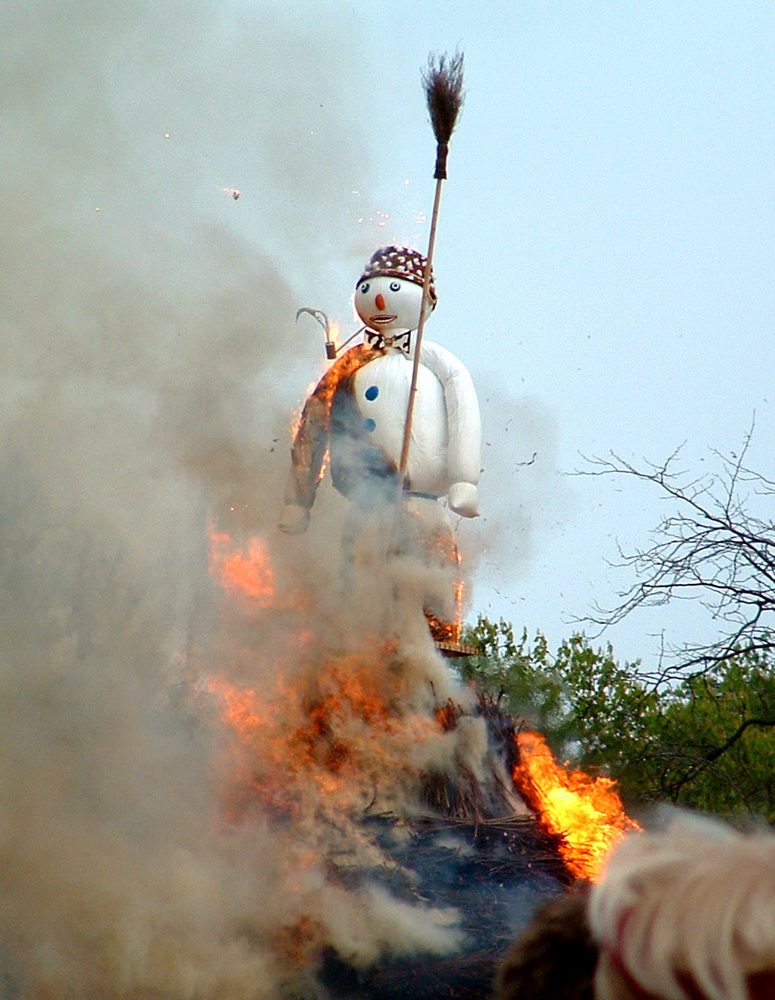

Spring is a season of renewal and growth, and many cultures around the world celebrate this time of year with vibrant festivals and traditions. Here are some examples of spring festivals from different parts of the world:

Holi: Holi is a Hindu festival that is celebrated in India and other parts of South Asia. It is also known as the "Festival of Colors" because participants throw brightly colored powder and water at each other. Holi usually takes place in March and symbolizes the victory of good over evil and the arrival of spring.
Cherry Blossom Festival: The Cherry Blossom Festival is a spring festival that takes place in Japan and celebrates the blooming of cherry blossom trees. The festival usually takes place in late March or early April, and people gather in parks and gardens to enjoy the beautiful pink and white blossoms. The festival also includes traditional Japanese food, music, and dance.

Nowruz: Nowruz is a Persian New Year festival that is celebrated in Iran and other parts of Central Asia. The festival usually takes place on the spring equinox (around March 20th) and celebrates the arrival of spring and the start of a new year. Nowruz traditions include setting up a "haft-seen" table with seven symbolic items, visiting friends and family, and participating in festive events.

Songkran: Songkran is a Thai New Year festival that takes place in mid-April and is known for its water fights. During Songkran, people splash water on each other as a way of washing away bad luck and starting fresh for the new year. The festival also includes parades, music, and traditional food.
Easter: Easter is a Christian holiday that celebrates the resurrection of Jesus Christ. It is typically celebrated in late March or early April and includes traditions such as decorating eggs, attending church services, and enjoying festive meals with family and friends.
Where it comes from

Spring festivals have originated from various cultures and regions around the world. Many of them have their roots in ancient traditions and religious beliefs that celebrated the arrival of spring as a time of renewal and rebirth.
Holi, for example, has its roots in Hindu mythology and is associated with the legend of Lord Krishna and Radha. The Cherry Blossom Festival originated in Japan, where the blooming of cherry blossom trees is an important cultural event. Nowruz has been celebrated for over 3,000 years in Iran and surrounding regions as the Persian New Year. Songkran originated in Thailand as a traditional New Year celebration, while Easter is a Christian holiday that originated in Europe.
Regardless of their origins, spring festivals have become beloved traditions that bring people together to celebrate the beauty and renewal of spring.
5 Best Festivals in Spring

The Canadian Tulip Festival is an annual event celebrating the tulip, Canada’s national flower. The festival takes place in Ottawa, the capital city of Canada, and features a wide range of tulip-themed activities and events.
Hanami, Japan
Every year, people worldwide celebrate spring’s arrival with Hanami festivals in Japan. During these celebrations, people admire the beauty of flowering plants, enjoy traditional foods and drink, and participate in a variety of cultural activities.
Songkran, Thailand
Every year, during the month of April, Thailand celebrates Songkran, the traditional Thai New Year. The festival is also known as the Water Festival, as one of its main activities is splashing water on friends and family. Songkran is a time of renewal and rejuvenation, and many Thais take the opportunity to tidy up their homes and make sure that everything is in order before the New Year begins.
Sechseläuten, Switzerland
The Sechseläuten spring festival is a tradition in Zurich, Switzerland, that dates back centuries. The festival centres around burning a life-sized figure of winter called the Böögg. The Böögg is filled with explosives and led through the streets by a man in a weasel costume. At the end of the procession, the Böögg is placed on a pyre in front of the city hall and set ablaze.
Semana Santa, Guatemala
Semana Santa, or Holy Week, is a religious festival that takes place in many countries around the world. The festival commemorates the passion, death, and resurrection of Jesus Christ.